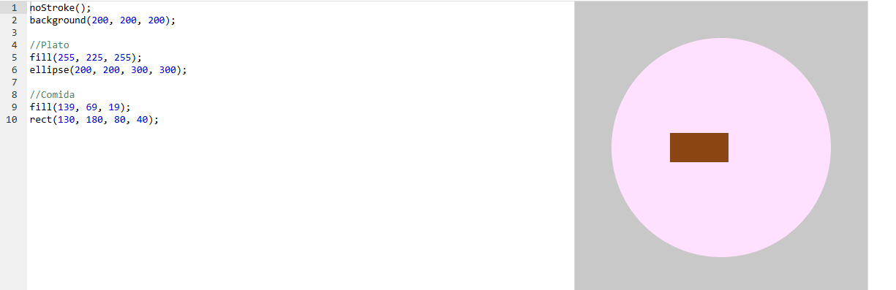

¿Qué hay de cena?
Un plato circular con un trozo de comida. Es el punto de partida del proyecto: a partir de aquí se pueden agregar más alimentos, cubiertos o una mesa.
Resultado
Código
Código del proyecto de Khan Academy. En js/cena.js está envuelto en setup() para funcionar con p5.js en una página web.
noStroke();
background(200, 200, 200);
//Plato
fill(255, 225, 255);
ellipse(200, 200, 300, 300);
//Comida
fill(139, 69, 19);
rect(130, 180, 80, 40);Conceptos que se practican
| Elemento | Qué hace |
|---|---|
background(r, g, b) | Pinta todo el lienzo con un color (aquí un gris). |
noStroke() | Dibuja el plato y la comida sin borde. |
ellipse con ancho = alto | Una elipse con los dos diámetros iguales es un círculo. |
Colores RGB | El café (139, 69, 19) representa la comida; el rosa claro (255, 225, 255), el plato. |
Captura del editor original
